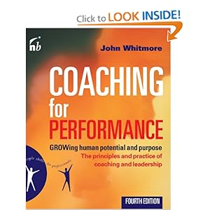
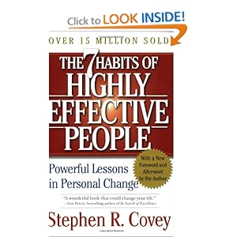

Books That Shaped My Last Year
I thought I'd share with you some books that shaped my view of the world in the last year (2010 - 2011). It's not only the book that mattered, it's also the moment when I read it so, here is my personal perspective:
Most mind-shifting:
****Agile programming philosophy. Emphasis on intrinsic software quality. Test driven development. Shows what it means to be a professional programmer and to see your profession as a form of art that you have respect and dedication for. Continuous improvement.
I read this book in a period of soul searching, while coding for HAWX 2, few months after SH5 release. It really got me thinking about how to build intrinsic quality in our products and how to support my colleagues to not compromise when it comes to "clean code" and bugs.
Probably the best management book I've ever read. Focus on intrinsic quality, continuous improvement, respect for people, engineering led organization - here are the principles.
To put it in a few words, "The Toyota Way" is more than management - it's a philosophy of work rooted in a deep respect for the human being - the engineer inside the organization, the customer, the supplier and even the competition.

The GROW coaching method. Inspiring. Art of asking the right questions. Trust in people potential. Strong leadership model.
I knew before reading this book that imperative management style is not suiting me nor that it produces good results in creative teams. I had no idea, though, on how to proceed. This book gave me a jump-start, courage and a tool to be a more people oriented manager, not only in attitude and mindset, but also in practice.

Personal development, personal leadership. From inside-out. Collaboration,Win-Win, Synergy, Proactiveness, End-in-mind, Prioritize, Listen and understand.
For me this book meant putting into words a series of unstructured thoughts, patterns, behaviours that I intuitively felt were right but I didn't know how to define or explain them. On the other hand, it helped me understand some wrong behaviours that I had, like not knowing how to act in a Win-Win fashion. Reading it, felt like a big relief.
Other mind-shifters since September 2010:
-
Tribes - Seth Godin
-
In simple words, what it means to be a leader. Am I a leader? Reading this book got me thinking about this question, porting me from yes to no and back several times.
-
The One Minute Manager - Kenneth H Blanchard and Spencer Johnson
-
A simple pattern for being a high performance manager.Goal settings, praising and reprimands. A very short must read for anyone (manager or not) - 2 hours at maximum. Has some very funny explanations about the formal appraisals and the average mentality that is so common in corporations.
-
The World is Curved - David Smick
-
My introduction to the global world of finances. This book gave me some very cool insights on the current financial crisis and on how the entrepreneurial world is financed and by whom.
-
If You Are Clueless About Starting your Own Business - Seth Godin
-
After reading the "The World is Curved", I wanted to know more about entrepreneurship. That combined with my girlfriend working to start her own coaching business, led me to getting this book. It took me through all the steps of starting a small business, from writing a business plan, testing the market, creating a marketing strategy, financing or finding a mentor to selling and growing your business. Short, very insightful, useful both as an overview and as a practical framework to follow when you take the big step.
-
Superfreakonomics - Stephen D. Levitt
-
I had fun reading this book. If I were to compare it, I'd compare it to Blink, The Tipping Point and The Outliers by Malcom Gladwell (one of my favourite thinkers and writers) - the same kind of example-based explanations.
-
The Inner Game of Work - Timothy Gallway
-
Again coaching, from the creator of professional coaching. More philosophy oriented than "Coaching for Performance" but, nevertheless, a must read. A nice and practical theory about how, sometimes, conscience blocks performance and how coaching can help removing these mental barriers.
-
Clever - Rob Goffee, Gareth Jones
-
I've never had any doubt that truly creative spirits need the resources of the larger organization, a space in which they can prototype their ideas, that they are rebellious and that they hate management for imposing restrictions on them. Therefore the manager should position himself/herself in such a way that he/she can actually provide visible value to his team in order to gain their trust and cooperation. In short, this is what this book is all about, with examples from Google, Microsoft, EA, Apple etc, etc.
-
The Myths of Innovation - Scott Berkun
-
THE tool to use when the team doesn't know what to do to generate new ideas and everyone is hoping for divine intervention.
And some literature, for the heart and soul:
-
The Fall of Constantinople - Vintila Corbul
-
I actually visited Istanbul after reading this book. Absolutely lovely and full of history.
-
Musashi - Eiji Yoshikawa
-
Quo Vadis - Henryk Sienkiewicz
-
The Agony And The Ecstasy - Irving Stone
-
Life of Michelangelo, a deep dive into the mind of a creative and passionate person.